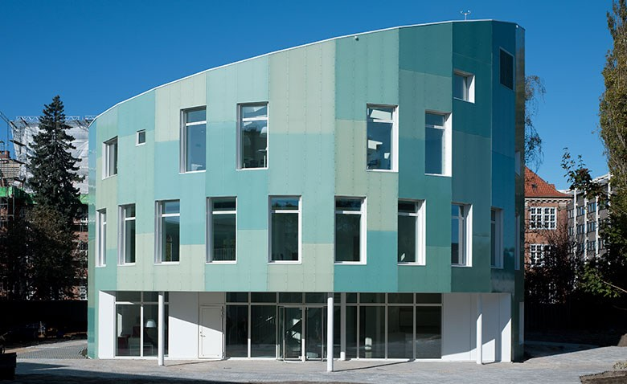
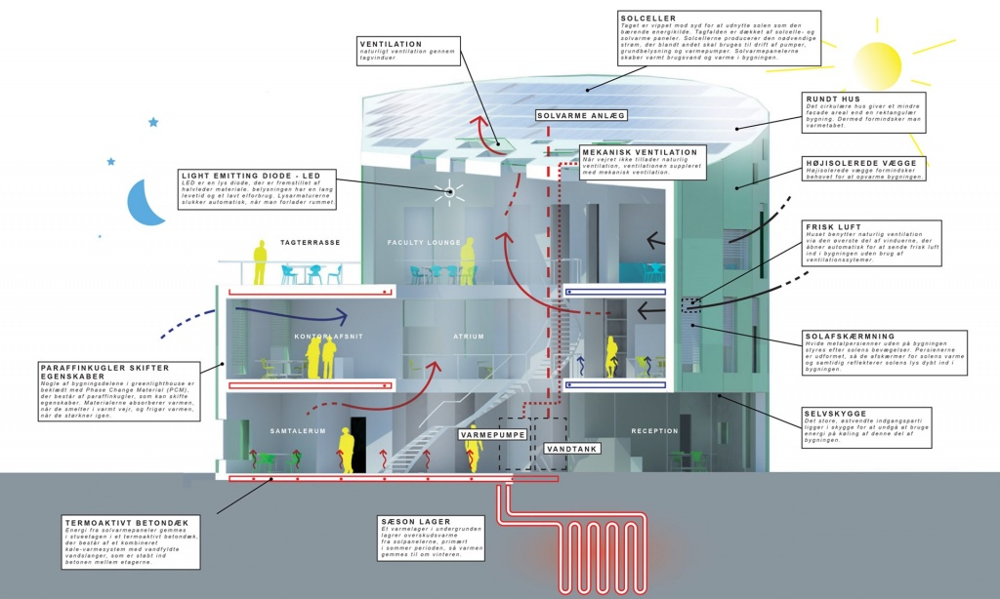
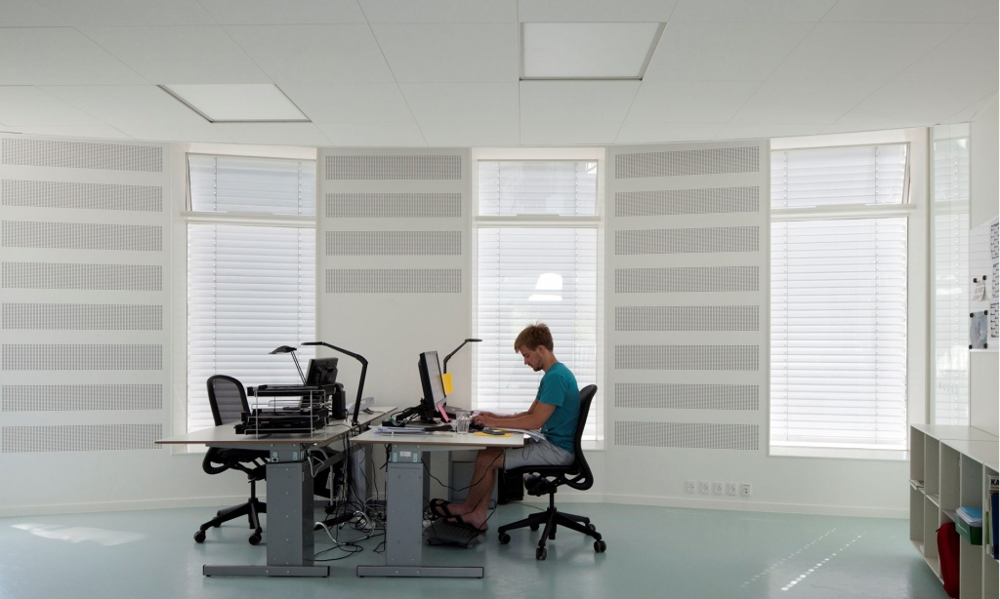
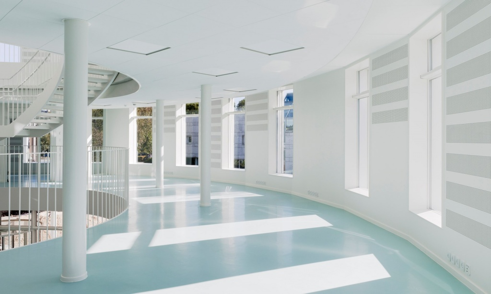

Вікна мають вирішальне значення у енергоефективному будівництві
.jpg) Раціональне проживання, на думку спеціалістів, може досягатися, якщо будинок буде відповідати наступним показникам: максимально ефективне використання енергії і мінімальні викиди СО2, сучасна архітектура і життєвий комфорт, а також використання відновлюваних джерел енергії з акцентом на сонячну енергію. Саме в цьому напрямку розвиваються ідеї з будівництва енергоефективних «зелених» технологій.
По статистиці, 90% всього свого часу ми проводимо всередині приміщень і на життєзабезпечення приміщень витрачається 40% всієї виробленої світової енергії. На жаль, до цього часу 30% всіх будівель Європи не забезпечують здоровий мікроклімат в приміщеннях.
Після аналізу ситуації і можливостей для її покращення компанія Velux розробила програму під назвою «Зразковий будинок 2020». Під час цієї програми в Данії і кількох інших європейських країнах збудують експериментальні будинки, які будуть відповідати сучасним вимогам з енергоефективності. В цих будинках будуть використані вікна і сонячні панелі, які дозволять забезпечити світло, тепло, а також створять необхідний мікроклімат. Усе буде досягнуто завдяки певним правилам.
Денне світло буде максимально використовуватись за допомогою цікавих інтер’єрних рішень. Буде закладена економія на штучному освітленні. Високий рівень природного світла забезпечить здоров’я і добробут мешканців.
Вікна повинні розміщуватися як в нижній частині для забезпечення хорошого огляду, так і у верхній частині для максимального освітлення. Для стін і підлоги будуть використовувати світлорозсіюючі кольори для кращого відбивання.
Здоровий клімат в приміщеннях буде досягатися автоматичним контролем природної вентиляції. Буде закладено ефект тяги/витяжний ефект – в цьому допоможе використання вікон, які відкриваються.
Одним із знакових проектів, виконаних з врахуванням всіх правил, став будинок «Зелений Маяк» в Копенгагені, який розміщено на території університету. Будинок поєднує в собі ефективне використання енергії, якість архітектури, здоровий клімат і хороші умови денного освітлення. Це триповерховий офісний будинок для студентів і викладачів факультету точних і природних наук. В проекті особливе значення надається тому факту, що сонце є важливим об’єктом науки і одним з найбільш значних джерел енергії в «Зеленому Маяку».
В будинку застосована комплексна система: мансардні вікна з двокамерними склопакетами і надійною герметичною установкою, а також штори і жалюзі для контрою освітлення.
Площа будинку 950 м2, він збудований по принципу концепції «Активного будинку», що означає активне використання відновлювальних джерел енергії. Завдяки циліндричній формі знижені теплові втрати фасаду будинку і ефективніше використовується сонячне світло протягом всього дня – одне з вікон завжди знаходиться перпендикулярно сонцю.

|